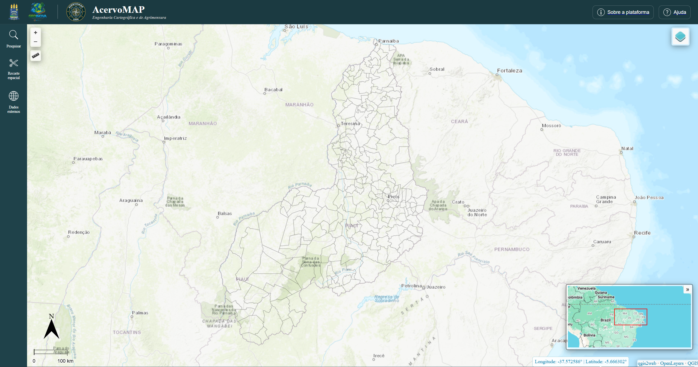

Sobre
O UFPI AcervoMAP é um Sistema de Informação Geográfica Web (SIGWeb), desenvolvido como produto final do Trabalho de Conclusão de Curso intitulado “Desenvolvimento de Plataforma SIGWeb Open Source para Gestão e Difusão de Dados Geoespaciais na UFPI”, do curso de Engenharia Cartográfica e de Agrimensura da Universidade Federal do Piauí (UFPI).
A plataforma utiliza ferramentas de código aberto para a disponibilização, visualização e consulta de dados geoespaciais. Sua implementação integra as tecnologias PostgreSQL/PostGIS, GeoServer e OpenLayers, com apoio do QGIS para o preparo dos dados. Nesta versão, a plataforma utiliza como estudo de caso os dados geoespaciais do Trabalho de Conclusão de Curso “Mapeamento do Potencial Geográfico Energético Solar do Piauí”.
Entre as funcionalidades disponíveis, destacam-se as ferramentas de pesquisa por município, recorte espacial de dados vetoriais e raster e integração de dados externos por meio de geosserviços. A interface também permite filtrar e gerenciar as camadas disponíveis, consultar seus metadados, ajustar a opacidade, visualizar tabelas de atributos, realizar o download dos dados e compartilhar os endereços das camadas nos padrões da OGC (WMS e WFS).
Equipe de desenvolvimento
-
Kenedy Anderson Gomes da Silva Engenheiro Cartógrafo e Agrimensor Desenvolvedor Email: akenedy38@gmail.com Lattes:

http://lattes.cnpq.br/5640523281588076
-
Samantha Larusy Nunes Siqueira Engenheira Cartógrafa e Agrimensora Desenvolvedor Email: samanthalarusy@gmail.com Lattes:

http://lattes.cnpq.br/9151904194096558
-
Elayne da Silva Figueiredo Engenheira Cartógrafa e Agrimensora Orientadora Email: elaynef@ufpi.edu.br Lattes:

http://lattes.cnpq.br/3882599359083651
Dados
JESUS, Maria Rita Silva de; AMARAL, Sarah de Oliveira. Mapeamento do potencial geográfico energético solar no estado do Piauí. 2026. Trabalho de Conclusão de Curso (Graduação em Engenharia Cartográfica e de Agrimensura) – Centro de Tecnologia, Universidade Federal do Piauí, Teresina, 2026.